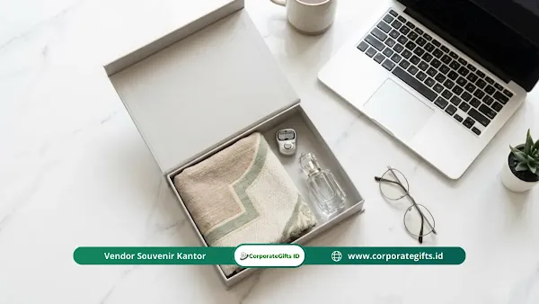

Corporate Gifts ID - Tren hampers Lebaran 2026 untuk karyawan perusahaan didominasi oleh tiga pilar utama: personalisasi eksklusif, produk ramah lingkungan (eco-friendly), dan paket wellness yang mendukung kesehatan fisik serta mental di tengah dinamika kerja modern. Pemilihan hampers yang tepat kini tidak sekadar untuk menggugurkan kewajiban tahunan, melainkan strategi krusial untuk memperkuat employer branding dan loyalitas tim kerja.
Pernahkah Anda merasa bingung menentukan bingkisan hari raya untuk klien atau tim di kantor? Bayangkan skenarionya: perusahaan telah mengalokasikan puluhan juta rupiah untuk memesan ratusan kaleng biskuit atau kue kering pabrikan, namun respons yang didapat hanya ucapan terima kasih dingin di grup pesan instan. Tidak ada antusiasme, tidak ada unggahan media sosial yang menandai akun kantor. Investasi perusahaan pun menguap begitu saja tanpa kesan mendalam.
Di tahun 2026, dinamika hubungan kerja telah bertransformasi secara signifikan. Karyawan generasi Milenial dan Gen-Z yang mendominasi angkatan kerja saat ini jauh lebih menghargai nilai kegunaan nyata dan ketulusan perhatian daripada sekadar volume barang. Bingkisan Lebaran yang dirancang dengan sentuhan personal menjadi cermin keterbukaan kultur korporat terhadap kesejahteraan karyawannya.
Poin Kunci Tren Hampers Lebaran 2026:
- Kurasi Bernilai Emosional: Bergeser dari barang massal generik menuju paket personalisasi dengan kartu apresiasi otentik.
- Fokus pada Kebugaran (Wellness): Paket aromaterapi, tisane herbal artisan, dan perlengkapan relaksasi menduduki peringkat teratas pencarian.
- Konsep Keberlanjutan (Eco-Living): Wadah serbaguna yang dapat dipakai ulang seperti besek anyaman purun, keranjang rotan, atau kotak kayu pinus.
- Dukungan UMKM Lokal: Menghadirkan kopi specialty nusantara, madu hutan murni, dan cokelat artisan daerah.
- Pemesanan Lebih Awal (H-60): Memastikan sampel fisik disetujui sebelum lonjakan antrean produksi pabrik jelang Idulfitri.
Kenapa Tren Hampers Lebaran 2026 Bergeser ke Arah Personal?
Kita semua memahami sensasi menerima bingkisan yang jelas diproduksi secara massal tanpa adanya keterlibatan emosional. Rasanya berjarak dan formalitas semata. Pola kerja fleksibel (hybrid working) membuat pertemuan tatap muka di kantor berkurang, sehingga momen penyerahan hampers Idulfitri bertindak sebagai jembatan silaturahmi yang sangat krusial.
Alasan mendasar mengapa personalisasi menjadi tren terdepan di tahun 2026:
- Memperkuat Rasa Memiliki (Sense of Belonging): Produk dengan ukiran nama, inisial grafir laser, atau catatan apresiasi tulus membuat staf merasa dihargai sebagai individu berharga, bukan sekadar angka di laporan laba rugi.
- Dampak Organik Employer Branding: Hampers yang dikemas secara estetik memiliki peluang tinggi untuk diunggah secara sukarela oleh karyawan ke Instagram atau LinkedIn. Ini adalah promosi citra positif tempat kerja idaman secara cuma-cuma.
- Meniadakan Pemborosan Barang: Dengan kurasi kebutuhan fungsional harian, produk yang diberikan pasti dipakai dan tidak akan terbengkalai di sudut lemari.
- Cerminan Nilai Luhur Korporat: Pilihan isi bingkisan merefleksikan kepedulian sosial perusahaan terhadap lingkungan dan kesehatan mental tenaga kerja.
Jenis Hampers Lebaran yang Paling Dicari Tahun Ini
Berdasarkan preferensi pengadaan korporat menyambut Ramadan dan Idulfitri 2026, berikut empat paket unggulan yang terbukti paling berkesan bagi penerima:
1. The Wellness & Mindfulness Kit
Keletihan bekerja dan stres adalah tantangan produktivitas nyata di lingkungan modern. Memberikan paket relaksasi mental menghadirkan nilai kepedulian yang sangat mendalam:
- Diffuser Aromaterapi & Essential Oils: Wewangian alami lavender, serai, atau peppermint untuk menciptakan suasana tenang di rumah saat libur Lebaran.
- Artisan Tea & Tisane Herbal: Racikan bunga telang, chamomile, dan daun mint estetik dalam tabung kaca dengan saringan kayu bambu.
- Bantal Leher & Silk Eye Mask: Perlengkapan esensial yang sangat bermanfaat mendampingi perjalanan mudik karyawan agar tetap nyaman.
- Jurnal Refleksi Kulit PU: Buku catatan bersampul kulit sintetis dengan kutipan inspiratif untuk menyusun target hidup baru.

Paket hampers eco-friendly dan kuliner nusantara premium untuk bingkisan Idulfitri kantor.
2. Eco-Friendly & Sustainable Living
Tumpukan sampah plastik sisa hari raya adalah persoalan serius yang kini dihindari banyak instansi. Karyawan modern mengapresiasi bingkisan yang selaras dengan pelestarian bumi:
- Wadah Serbaguna Reusable: Mengganti kardus sekali pakai dengan besek anyaman bambu rapi, keranjang purun, atau kotak kayu pinus estetik yang bisa dialihfungsikan sebagai organizer rumah.
- Cutlery Set Kayu / Sendok Stainless: Perlengkapan makan higienis travel yang ringkas dibawa ke kantor.
- Tumbler Vacuum Stainless SUS 304: Menjaga kesegaran minuman dingin atau teh hangat dengan grafir ucapan selamat Idulfitri.
3. Tech & Desk Essentials Kit
Mendukung efisiensi dan kenyamanan ruang kerja, sekaligus menjadi cerminan dukungan perusahaan terhadap produktivitas tim:
- Desk Mat Kulit Sintetis: Alas meja berukuran lebar yang membuat tata letak laptop dan tetikus tampak rapi serta mewah.
- Wireless Fast Charger & Cable Organizer: Membebaskan meja kerja dari lilitan kabel kusut.
- Screen Bar Monitor Light: Mencegah kelelahan mata bagi tim yang sering menatap layar monitor dalam durasi panjang.
4. Taste of Nusantara (Kuliner Lokal Premium)
Mengangkat pamor kuliner lokal menjadi bingkisan mewah berkelas eksekutif melalui kemitraan dengan pengrajin lokal:
- Kopi Single Origin Drip Bag: Pilihan biji kopi specialty dari Gayo, Toraja, atau Flores dalam sachet seduh praktis.
- Madu Hutan Murni & Rempah Organik: Sumber energi sehat alami tanpa pemanis buatan.
- Cokelat Artisan Nusantara: Cokelat batangan premium dengan perpaduan garam laut (sea salt) atau rempah tropis.
Estimasi Anggaran dan Komparasi Paket Hampers Lebaran 2026
Menjaga anggaran agar tidak membengkak (anti-boncos) memerlukan pemetaan tingkatan penerima yang realistis. Gunakan tabel komparasi budget berikut sebagai panduan penyusunan RAB pengadaan:
| Tingkatan Paket | Estimasi Bujet / Pax | Rekomendasi Isi Paket | Format Kemasan |
|---|---|---|---|
| Staff & Internal Team | Rp150.000 - Rp250.000 | Tumbler Stainless, Kopi Drip Bag, Pouch Mukena/Kue Bundling | Besek Anyaman Bambu + Pita Satin Hijau |
| Supervisor & Lead | Rp300.000 - Rp450.000 | Wellness Diffuser Set, Artisan Tea, Desk Mat Kulit PU, Kartu Kayu | Kraft Hardbox Premium dengan Sleeve Custom |
| Manager & Mitra Klien | Rp500.000 - Rp850.000 | Madu Hutan Jar, Cangkir Keramik Handmade, Smart Desk Tech, Cokelat Artisan | Kotak Kayu Pinus Grafir Laser + Kunci Kuningan |
| Direksi & VIP Priority | > Rp1.000.000 | Executive Premium Set, Sajadah Sutra Custom, Aromaterapi Impor, Jam Meja | Exclusive Rigid Box Beludru dengan Grafir Nama Logam |
Cara Memilih Vendor dan Waktu Pemesanan Terbaik
Memilih vendor cenderamata korporat membutuhkan kehati-hatian ekstra agar pesanan tidak mengecewakan di detik-detik akhir:
- Kapasitas Produksi Nyata: Hindari penyedia dadakan yang tidak memiliki kantor operasional atau legalitas usaha B2B yang jelas.
- Fleksibilitas Kustomisasi Logo: Pastikan penyedia mampu menerapkan teknik laser engraving, sablon presisi, atau embos foil yang halus tanpa merusak estetika desain produk.
- Waktu Pemesanan Ideal (Early Booking): Jangan menunggu dana THR cair baru mencari vendor. Periode H-60 hingga H-45 sebelum Idulfitri adalah waktu emas untuk mengunci sampel fisik, memastikan ketersediaan stok bahan, serta mengamankan slot pengiriman ekspedisi logistik yang padat jelang cuti bersama.
Pertanyaan yang Sering Diajukan (FAQ)
Kesimpulan: Bangun Loyalitas Nyata Melalui Hampers Bermakna
Tren hampers Lebaran 2026 mengajarkan bahwa makna pemberian bukan semata terletak pada nominal harga, melainkan kedalaman empati perusahaan dalam memahami kebutuhan tim kerjanya. Melalui hampers yang fungsional, ramah lingkungan, dan bernilai kesehatan, perusahaan mengirimkan pesan apresiasi yang tulus: "Terima kasih atas perjuangan dan dedikasi Anda sepanjang tahun ini."
Konsultasikan kebutuhan bingkisan Idulfitri instansi Anda bersama tim kurator kami di Layanan Hampers & Parcel Perusahaan CorporateGifts.ID untuk mendapatkan penawaran terbaik dan sampel gratis.

Ditulis oleh: Arinda Zakia
Senior Corporate Gifting SpecialistSpesialis kurasi merchandise dan souvenir korporat di CorporateGifts.ID. Berpengalaman lebih dari 7 tahun dalam menyusun paket corporate gift fungsional untuk instansi BUMN, kementerian, perbankan, dan perusahaan multinasional.
Lihat Profil Lengkap & Panduan Lainnya